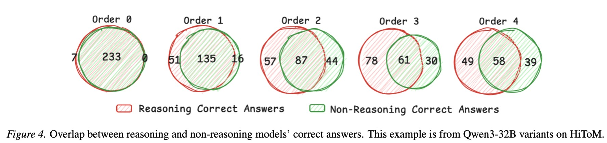
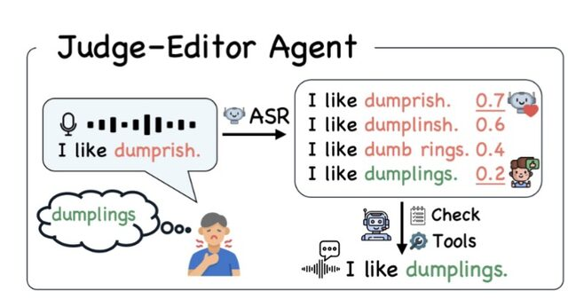
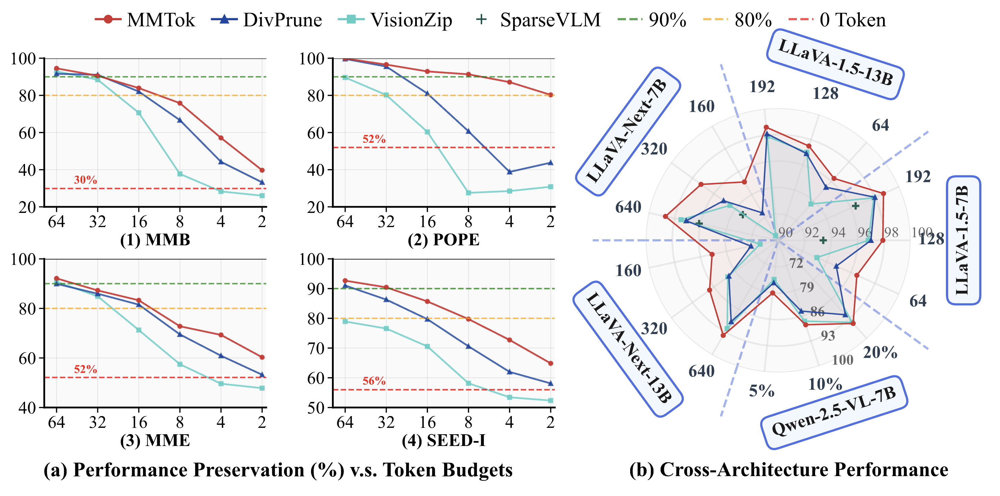
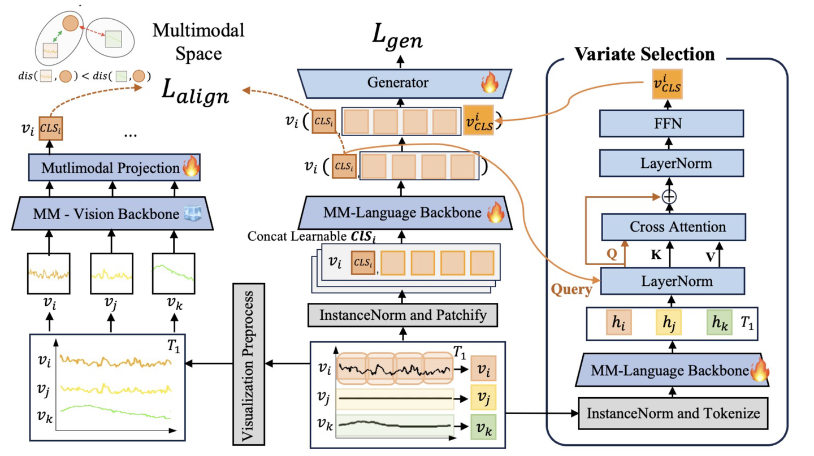
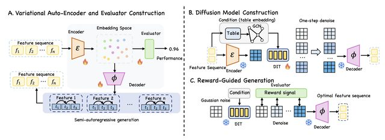
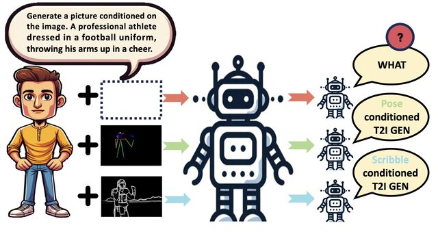
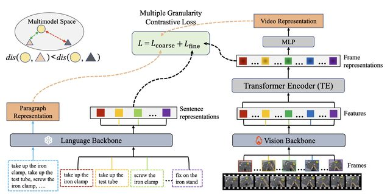
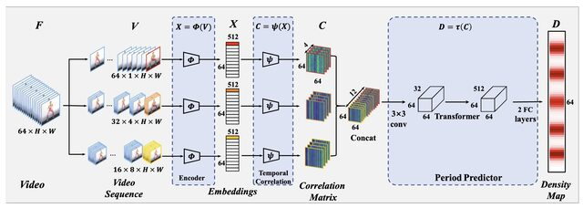

Sixun Dong
Multimodal Learning, VLM, LLM Agent
Independent Researcher, AZ, USA
Currently, I am an independent researcher. I completed my Master's at ShanghaiTech University under Professor Shenghua Gao.
My research focuses on multimodal AI systems that bridge computer vision, natural language processing, and machine learning, with different applications.
Recent News
Selected Publications
arXiv'2604 Rethinking Model Efficiency: Multi-Agent Inference with Large Models
Analyzes VLM end-to-end latency versus decoder length and shows large models with fewer output tokens can outperform smaller models with long generations; proposes multi-agent inference that transfers key reasoning tokens from a small model when needed.

arXiv'2602 To Think or Not To Think, That is The Question for Large Reasoning Models in Theory of Mind Tasks
Investigates the capabilities of Large Reasoning Models (like OpenAI o1/o3) on Theory of Mind tasks, revealing that continuous reasoning does not always guarantee better socially-aware outcomes.

ICASSP'26 Towards Robust Dysarthric Speech Recognition: LLM-Agent Post-ASR Correction Beyond WER
Proposes an LLM-agent-based post-ASR correction framework for dysarthric speech recognition that focuses on semantic accuracy rather than just minimizing Word Error Rate (WER).

ICLR'26 MMTok: Multimodal Coverage Maximization for Efficient Inference of VLMs
Proposes MMTok to efficiently select informative vision tokens via a multimodal coverage maximization strategy, significantly accelerating VLM inference while maintaining model performance.

arXiv'2506 Teaching Time Series to See and Speak: Forecasting with Aligned Visual and Textual Perspectives
Proposes TimesCLIP, innovatively aligning time series data with visual and textual multi-modal perspectives to effectively enhance both short-term and long-term forecasting performance.

NeurIPS'25 Sculpting Features from Noise: Reward-Guided Hierarchical Diffusion for Task-Optimal Feature Transformation
Proposes a reward-guided hierarchical diffusion model that "sculpts" data representations from noise to generate optimal feature transformations for specific downstream tasks.

Introduces the MLLM-Tool framework and contributes a specialized dataset to empower Multimodal Large Language Models (MLLMs) with the ability to understand, learn, and invoke external tools.

CVPR'23 Weakly Supervised Video Representation Learning with Unaligned Text for Sequential Videos
Proposes a weakly supervised video representation learning approach that utilizes unaligned text for sequential videos, significantly reducing the reliance on fine-grained video-text alignment annotations.

CVPR'22🏆 Oral TransRAC: Encoding Multi-scale Temporal Correlation with Transformers for Repetitive Action Counting
Introduces the RepCount dataset and pioneers the use of regression density maps alongside a Transformer-based architecture to encode multi-scale temporal correlations, significantly improving repetitive action counting.
Experience
GenAI Research Intern
Zoom Inc., GenAI Research Group
May 2025 - Aug 2025
Worked on VLM and LLM Agent. Published one first-author paper on efficient VLM inference and two collaborative papers on LLM evaluation.
Research Intern
DGene Digital Technology Co., Ltd., Digital Human Algorithm Department
May 2023 - Jan 2024
Led digital human projects: (1) audio-driven talking head video generation, achieving SoTA on commercial and academic benchmarks; (2) 3D human body reconstruction with <7% measurement error; (3) co-speech gesture generation.
Academic Service
Reviewer
Conferences: CVPR (2023–2026), ICCV (2023, 2025), ECCV (2024, 2026), NeurIPS (2025), ICML (2025, 2026),ICLR (2026), ACM MM (2023–2025), ACCV (2024), KDD (2025)
Journals: IEEE Transactions on Multimedia, Neural Networks(Elsevier), ACM Transactions on Knowledge Discovery from Data
Education
M.S. in Computer Science
ShanghaiTech University, China
SVIP-Lab, Advisor: Prof. Shenghua Gao
B.E. in Computer Science (Dual Degree)
Dalian University of Technology, China
B.E. in Process Equipment and Control Engineering
Dalian University of Technology, China